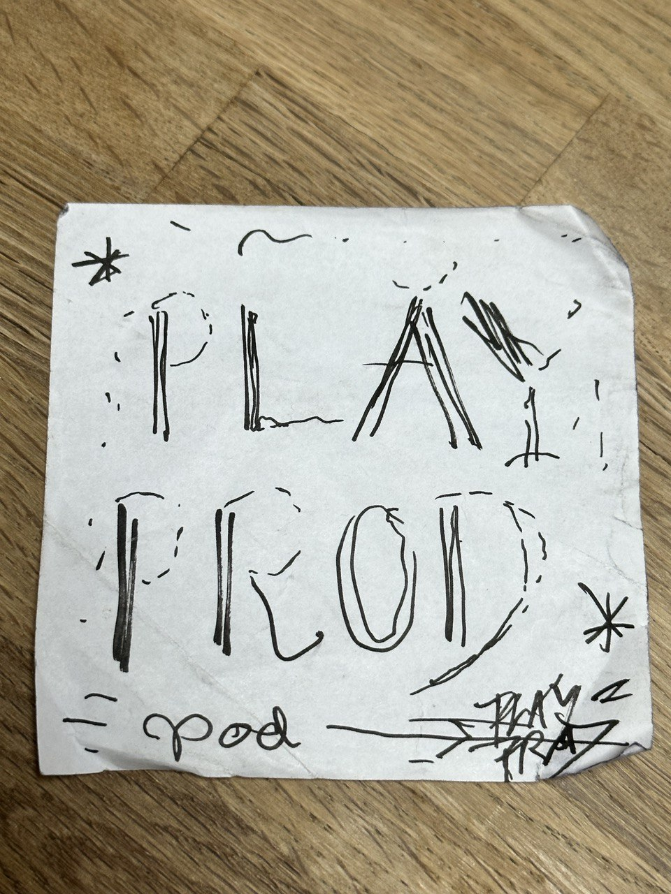

Communicating ideas¶
“Tell me what you want, what you really really really want”
- the Spice Girls
A recurring issue I ran into as a child was that people would be less likely to believe me when I was telling the truth. The reason was that when I was saying something I knew was true (but that may seem unlikely), I would not try to suppress laughter, or otherwise focus on being convincing (whereas I would do so when e.g. inventing some random story about why I couldn’t possibly have done my homework that afternoon..). After all, what I was saying was true.
The cognitive error I made in such cases is similar to that made by people who think that liberatory projects need no marketing. in fact, they face a much tougher communicative landscape (due to incentive status quo structures). While some of the more bullshit aspects of marketing may not be as essential for such projects, communicating one’s ideas well and making one’s approaches desirable remains one of the most important aspects of any project that seeks to influence or impact a significant amount of people.
The course was very engaging, and helped me achieve more clarity on the various ways I might go about not repeating the errors of my childhood in my professional life.
The deliverable for this course was to think about a number of aspects that could be useful for communicating our own professional identities a s well as our projects. Here are my results.
purpose (own?)¶
I find purpose in seeking to make lives full of diverse experience, joy, authentic pleasures, connection to others, and growing understanding of the world possible for as many people as possible (and trying to achieve the same for myself). All this should happen within a regenerative framework where non-human life and environments are harmed as little as possible.
values¶
- autonomy and freedom
- mutuality and love
- self-ironic, low-bullshit, authentic attitudes
- harm reduction and regeneration
- playfulness and pleasure-seeking
vision (intimate/domestic playful production)¶
As part of a larger liberatory project outflanking the status quo, people find grassroots and distributed ways to fulfill their basic needs and their most authentic desires. Domestic and intimate spaces become filled with possibility (partly embodied by custom-built, reproducible artefacts that enable a variety of alternative ways of living).
mission¶
..participating in, initiating, collaborating with, and facilitating intiatives and open designs (to be produced or implemented in a distributed way) that build autonomy and alternatives to the harmful patterns we are stuck it. Concretely, in collective, intimate and domestic urban spaces, promoting new and boosting existing ways of growing, making, foraging what we truly want and need to live.
minimum viable message¶
We are stuck in a centuries old dynamic that locks us into harmful patterns. We feel this even in the most intimate spaces, such as where we sleep and have sex, where we cook and where we exchange secrets. Together, let us reclaim those spaces, and use our control over them to build autonomy by producing what we truly want and need ourselves.
personal brand kit¶
Aesthetics:
- complex, not complicated
- intricate and playful, not ostentative or austerly minimalist
- radical but not dogmatic - confrontative but loving
font¶
Similarly to how Gothic typefaces have partially changed connotation by becoming part of graffiti / street art culture, a Bodonic but punk (diy, in decay, hand-drawn,…) font could symbolise the impulse captured in the slogan “luxury for all” - we seek not self-flaggelatingly frugal parsimony, but rather a regenerative post-scarcity for all.
Here is a very rough version of what that might look like: 
colours¶
strong, non pastel colours. to symbolise both straightforwardness and a cool-headed of the necessity of radical transformation as we face the crises we face. Dark, and bright colours. Not pastel. Orange, yellow, red, dark blue, black.
something that represents me¶
in line with the colours - lemons, oranges, amarena cherries - sweet and sour.